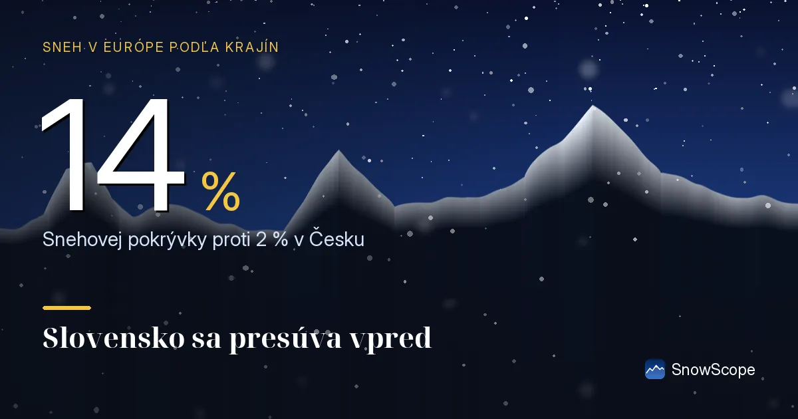
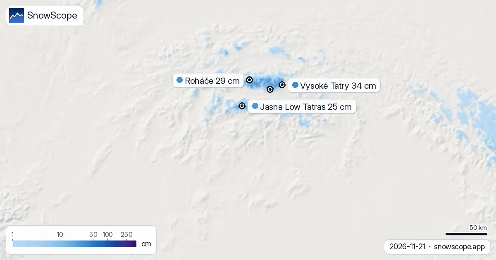

Slovensko sa presúva vpred: 14 % snehovej pokrývky proti 2 % v Česku
Slovenské hory uskladňujú tento týždeň oveľa viac vody v podobe snehu ako české. Čerstvý sneh za posledné tri dni posunul snehovú pokrývku Slovenska na 14 %, zatiaľ čo Česko zaostáva na pouhých 2 %.
Pozrite si predpoveď snehu pre Vysoké Tatry v aplikácii SnowScopeVýška snehu, upozornenia a 3D mapa, zadarmo.
Slovenská sneková výhoda rastie
Medzera medzi Slovenskom a jeho severným susedom sa prudko rozšírila. Česko má naproti tomu iba 2 % snehovej pokrývky a nevykazuje žiadnu porovnateľnú udalosť s čerstvým snehom. To je dôležité pre uskladňovanie vody: sneh, ktorý padá na začiatku sezóny, doplňuje horské zásobníky a zásoby podzemnej vody počas zimného a jarného topenia.
Rozdiel odráža, ako výška hôr formuje zrážky. Slovenské vrcholy sú vyššie a lapajú viac vlhkosti. České lyžiarske oblasti sú sústredené v nižších pohoriach, kde v tomto ročnom období stále prevláda dážď nad snehom.
| Country | White | Deepest resort | Next 7 days |
|---|---|---|---|
| Slovakia | 14 % | Vysoké Tatry | 11 cm |
| Poland | 11 % | Kasprowy Wierch | 14 cm |
| Czechia | 2 % | Ramzová | 10 cm |

Susedia sa rozbiehajú
Cez hranicu v Poľsku je sneková pokrývka 11 %, umiestnená medzi oboma krajinami. Poľský líder Kasprowy Wierch drží 36 cm hlbky snehu a môže vidieť ďalších 14 cm počas nasledujúcich siedmich dní. Ramzová, najhlbší bod Česka, má iba 13 cm a čelí pomalšiemu výhľadu 10 cm za rovnaké obdobie.
Tieto rozdiely odrážajú geografiu aj načasovanie nedávnych poveternostných systémov. Slovensko chytilo najnovejší impulz vlhkosti; nižší terén Česka a milejšie vzdušné hmoty udržali sneh riedky.

Horské pásma: sneh sa začína nad 1 000 m na Slovensku
Na Slovensku je hranica snehu na 1 000 m. Pod touto výškou je len 4 % terénu pokryté snehom a priemerná hlbka je nula. Medzi 1 000 m a 1 500 m sa pokrývka skočí na 68 % s priemerom 3 cm—dosť na zadržanie vody, ale dosť tenký na to, aby boli viditeľné skaly. Nad 1 500 m sa začína úplná sneková pokrývka: 100 % terénu je pokryté snehom, s priemernej 19 cm v pásme 1 500–2 000 m a 30 cm v pásme 2 000–2 500 m.
Pre hydrológa je táto stratifikácia rozhodujúca. Najhlbší sneh sa nachádza tam, kde bude najdlhšie pretrvávať a topí sa najpomalšie, čím kŕmi toky až do neskorej jari. Čerstvý sneh na stredných výškach (1 000–1 500 m) je náchylnejší na udalosti s dažďom na snieh a rýchlejšie topenie.
Strediská: Vysoké Tatry vedú nábeh
Medzi slovenskými hlavnými lyžiarskymi oblasťami drží Vysoké Tatry vo Vysokých Tatrách najviac snehu: 34 cm hlbky po prijatí 18 cm čerstvého snehu za tri dni. Vysoké Tatry ako celok zaznamenali 24 cm nového snehu, najväčší celkový súčet v krajine. Štrbské Pleso, tiež vo Vysokých Tatrách, má 22 cm hlbky so 21 cm nového snehu—najväčšia trojdňová akumulácia na ktoromkoľvek sledovanom stredisku.
Roháče a Jasná Nízke Tatry vykazujú 29 cm a 25 cm. Vrátna, najplytschia z piatich, ešte drží 19 cm a dostala 20 cm čerstvého snehu. Všetkých päť oblastí leží nad 1 400 m, takže zostávajú v zóne spoľahlivej snekovej pokrývky aj po udalostiach topenia.
Čo čaká: viac snehu, potom suchšie obdobie
V nasledujúcich troch dňoch Slovensko zaznamená maximálne 9 cm nového snehu, pričom 5 cm najpravdepodobnejšie 23. novembra. Tento deň označuje najsnehulejší deň nadchádzajúceho týždňa. Na rozdiel od toho týždeň nato (29. novembra až 5. decembra) vyzerá suchší: je predpokladaných iba 6 cm, čo naznačuje krátke suché okno pred návratom zimy.
Pre účtovanie vody to má dôležitosť. Nadchádzajúcich 9 cm sa pripočíta k zásobníku; suchší týždeň, ktorý nasleduje, dáva ranému snehu možnosť konsolidovať sa a usadiť.
Trend: týždeň volatility pred stabilizáciou
Za posledných šesť dní sa snekou pokryté plocha Slovenska pohybovala medzi 1 660 km² a 2 680 km², keď sa topenie a nový sneh navzájom konkurovali. Vzorec ukazuje nestabilitu na začiatku sezóny: nie všetok čerstvý sneh sa zachováva a výkyvy sú ostré. Dnešných 2 680 km² predstavuje zotavenie a rast. Ako teploty klesnú a sneková vrstva sa zhrubne počas decembra, tieto divé výkyvy by sa mali zmierniť. Skutočnosť, že Vysoké Tatry teraz vedú národné poradie (po tom, čo Ski centrum Dedinky držalo prvé miesto začiatkom týždňa), zdôrazňuje, ako sa terén nad 2 000 m stáva spoľahlivým vodným skladom.
Tipy pre lyžiarov
- Zostaňte nad 1 500 m pre najlepšie zachovaný čerstvý sneh na začiatku sezóny. Pod touto výškou je pokrývka nerovnomerná a topenie je rýchlejšie.
- Sledujte riziko dažďa na snieh v pásme 1 000–1 500 m, ak teploty stúpnu nad bod mrazu medzi teraz a 23. novembrom.
- Vysoké Tatry a Štrbské Pleso majú najhrubší, najčerstvejší sneh. Pred vstupom na strmý terén mimo trás si skontrolujte oficiálny lavínny bulletin.
- Očakávajte, že suché obdobie po 23. novembri stabilizuje snekovú vrstvu; podmienky sa pravdepodobne zlepšia s konsolidáciou.
- Používajte mapu SnowScope na sledovanie hlbky snehu v reálnom čase vo vašej zvolenej výške a aspekte svahu.
About these numbers
Resort snow depths are the deepest snow on the resort's upper slopes on the date shown; they are estimates for an area, not a measurement at one point. Forecasts can change. Always read the official avalanche bulletin before going off-piste.
Cite this report
For research, teaching or the press: the numbers and charts are free to reuse under CC BY 4.0 with this citation.
SnowScope (2026), Slovensko sa presúva vpred: 14 % snehovej pokrývky proti 2 % v Česku, https://snowscope.app/blog/sk/2026/11/slovakia-snow-vs-neighbours-21-november-2026.html, accessed 2026-11-21
SnowScope (Atlas Labs). (2026, November 21). Slovensko sa presúva vpred: 14 % snehovej pokrývky proti 2 % v Česku. SnowScope snow reports. https://snowscope.app/blog/sk/2026/11/slovakia-snow-vs-neighbours-21-november-2026.html
BibTeX
@misc{snowscope2026slovakiasnowvsneighbours,
author = {{SnowScope (Atlas Labs)}},
title = {Slovensko sa presúva vpred: 14 % snehovej pokrývky proti 2 % v Česku},
year = {2026},
month = nov,
howpublished = {\url{https://snowscope.app/blog/sk/2026/11/slovakia-snow-vs-neighbours-21-november-2026.html}},
note = {Published 2026-11-21 13:39 UTC; accessed 2026-11-21}
}· CC BY 4.0 · Methods, data and tools →
Vysoké Tatry: snow and temperature by height, this winter vs last (tools) →
Follow Vysoké Tatry
Zadarmo: správa, keď prichádza nový sneh, a predpoveď každé ráno.